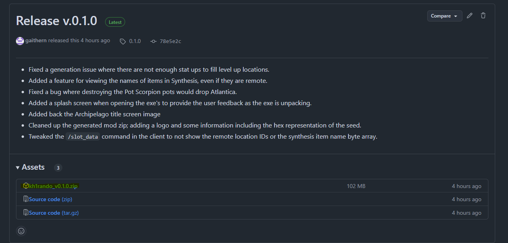

Required Software
In order to set up the Kingdom Hearts 1FM AP Randomizer, you need 2 pieces of software:
OpenKH
Kingdom Hearts 1FM AP Randomizer Software
Setting up OpenKH
Download the latest build of OpenKH

Extract the downloaded OpenKH zip file. Avoid extracting OpenKH into a OneDrive directory, as its known to cause issues.
Navigate to your extracted OpenKH directory and open "OpenKh.Tools.ModsManager.exe"
When opening the Mod Manager for the first time, the "Set-Up Wizard" should open automatically. If not, you can find it here:

Select your Game Edition, and point out or automatically detect your KH 1.5 + 2.5 installation folder.

When prompted, install Panacea.

When prompted, configure Lua Backend for KH1.

Create the necessary files to launch games directly if desired.

When prompted, extract KH1 game data.

Setting up Kingdom Hearts 1FM AP Randomizer Software
Download the latest build of the KH1 AP Randomizer Software.

Extract the zip file and find the following:

Next Step: Generating a Seed